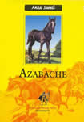
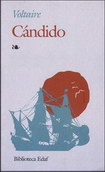
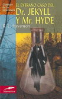

| EL LUGAR EN DONDE VIVES TU PROPIA REALIDAD |


Libros Clasicos
|  | |
|
Alrededor de la Luna Julio Verne |
Azabache Anna Sewell |
| Este viaje Alrededor de la Luna, continuación del relato titulado De la Tierra a la Luna, es la prolongación novelada del Verne que sabe combinar, con el artificio del narrador vigoroso, los mitos lunares imaginados por el hombre desde los inicios de la humanidad con los conocimientos científicos del siglo XIX. | Su héroe es un hermoso caballito negro, llamado por esa misma razón Black Beauty en inglés y que en español se conoce internacionalmente con el nombre de Azabache. Beauty está basada en una historia de la vida real de un caballo llamado Bessie. |
|  |  |
|
Cándido o El Optimismo Voltaire Voltaire |
El Extraño Caso del Dr. Jekyll y Mr. Hyde Robert Louis Stevenson |
| En esta célebre fantasía filosófica, el joven Cándido, discípulo del doctor Pangloss -a su vez discípulo de Leibniz, filósofo del optimismo- sufre el infortunio de creer que el nuestro "es el mejor de todos los mundos posibles". Tras numerosas desventuras, se retira junto a sus compañeros a orillas de la Propóntide, en donde descubre que el secreto de la felicidad reside en "cultivar nuestro huerto". | "Londres, invierno de 1884. El señor Utterson, notario del doctor Jekyll, relee el testamento del científico: 'Yo el firmante Henry Jekyll, deseo que a mi muerte todos mis bienes pasen a mi gran amigo y benefactor Edward Hyde.' Poco después, el señor Utterson descubre que el señor Hyde no sólo es una persona despreciable, sino un criminal. ¿Qué oscuro secreto, qué grave error de juventud obliga al intachable doctor Jekyll a nombrar a un asesino su principal benefactor?" |